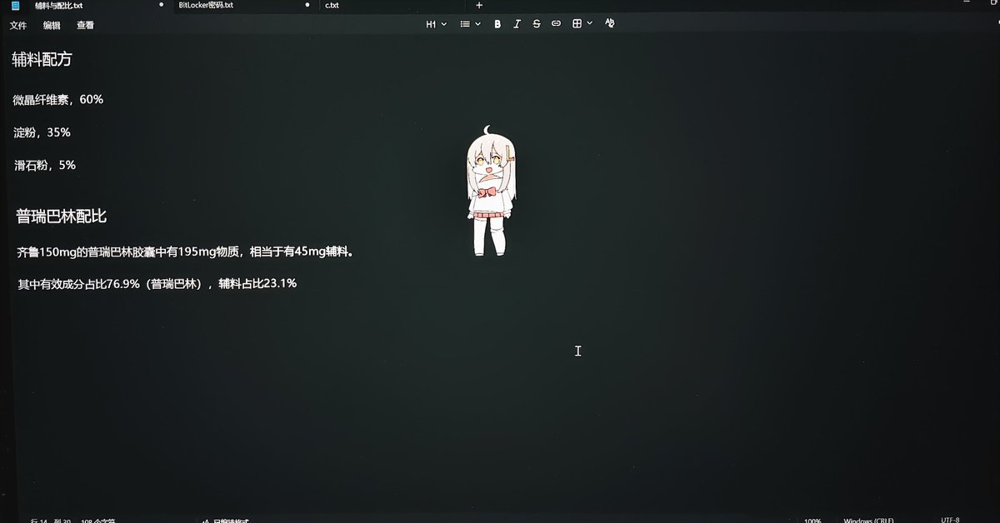

Exp cat
@bui_tu46916
@Antares04_64 用白砂糖可以吗

煜
@Antares04_64
各位自己做普瑞赛斯胶囊的一定要加辅料。辅料是崩解剂和润滑剂，不加的话，药效会大打折扣!
因为普瑞赛斯原粉太纯的话，会像胶一样粘在胃上，导致吸收效率下降
辅料配方如下：
（当然，如果没有微晶纤维素，可以直接用淀粉和滑石粉。如果连滑石粉都没有，直接用淀粉也可以不过效果会差一些。)
(补档) https://t.co/TIGoPbU6Nn